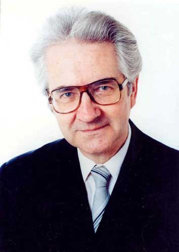
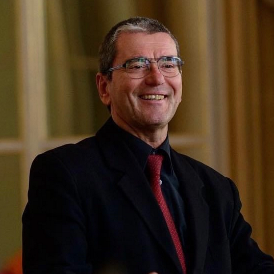

A kórus története
A Hegyalja Pedagógus Kórus története 1969 őszére nyúlik vissza, az akkori járási pedagógusok alapították Hagymási József vezetésével. A későbbiekben Reményi János vette át a szakmai vezetést.  Jelenleg a kórus karnagya Prof. Dr. Sándor Zoltán a Miskolci Egyetem Bartók Béla Zeneművészeti Karának professzora, az elnöki feladatokat már több mint 10 éve Fábián Ottóné látja el. i A kórus nem csupán egy énekegyüttes, hanem egy összetartó közösség is, melynek tagjait a közös éneklés öröme köti össze.  Az 1990-es évektől a kórus tagjai számára az utazás és a nemzetközi kapcsolatok jelentették a legtöbbet. Eleinte Szlovákiába, Lengyelországba és Erdélybe jutottak el, majd megnyíltak a határok és Olaszországban, Görögországban és Franciaországban is felléptek. A tagok számára a kórus szó szerint kinyitotta a világot. Az évtizedek során számtalan díjat és elismerést kaptak. A Hegyalja Pedagógus Kórus 1989 előtt megkapta a „Szocialista Kultúráért kitüntetést. Kétszeres, majd örökös „Kiváló Együttes” díjuk is van. Az országos minősítéseken vegyeskari kategóriában fesztiválkórus fokozatot értek el. Hatszor nyerték el a Magyar Rádió aranyplakettjét. A 25 éves évfordulójukon, 1994-ben Kodály emlékérmet és Pro Urbe Szerencs díjat kapott a kórus. Ezek az elismerések nem csupán a magas művészi színvonalat tükrözik, hanem a közösségért és a magyar kultúráért végzett értékes munkájukat is. Sikereik hozzájárultak Szerencs és a régió hírnevének öregbítéséhez, egyfajta kulturális nagykövetként képviselve a várost a hazai és nemzetközi zenei életben.